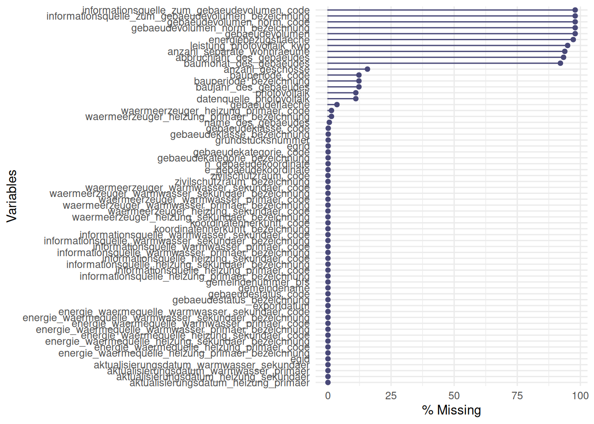
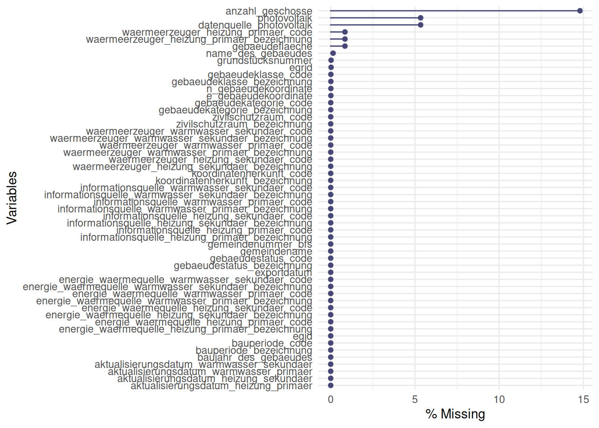
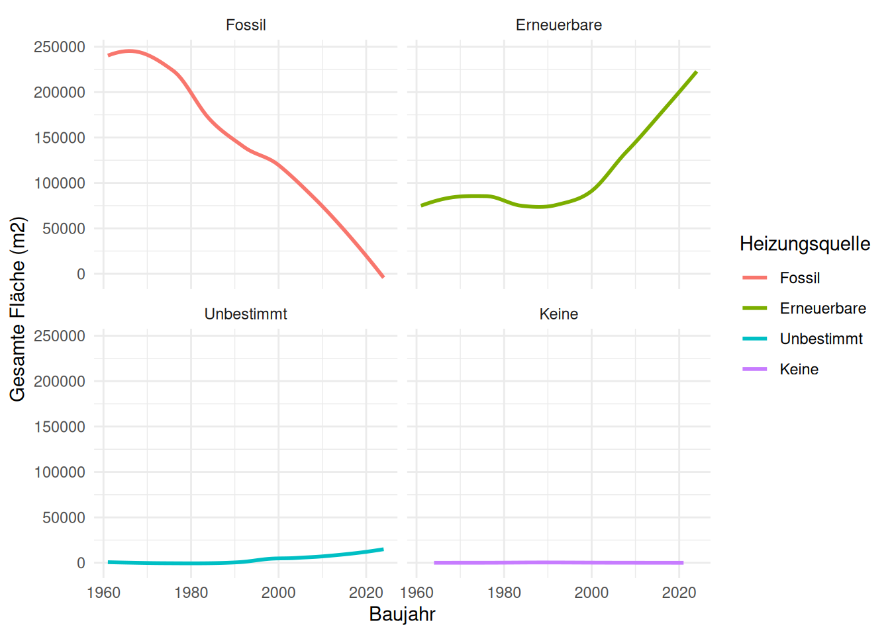
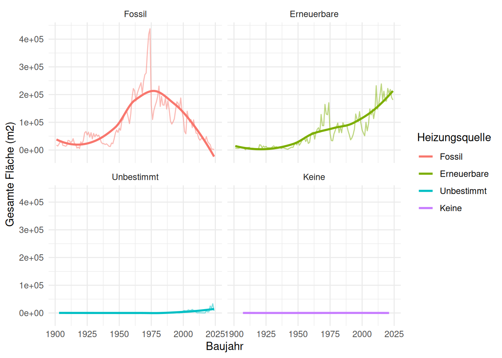
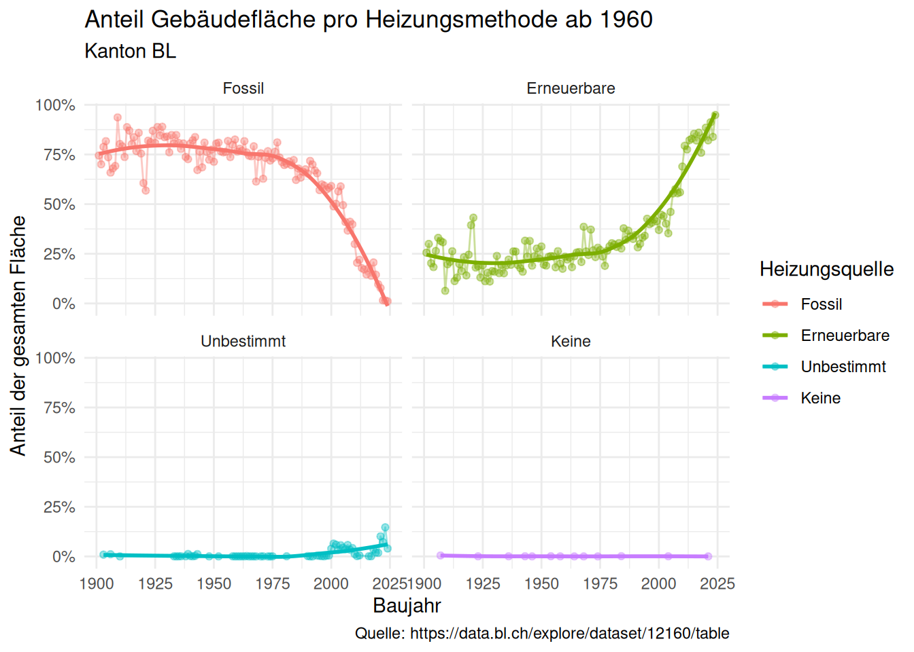

library(scales) # For percent_label() in ggplot()
library(naniar) # To visualise missing values
library(tidyverse)
# Downloaded from https://data.bl.ch/explore/dataset/12160/table
df <- read_delim("data/ogd_gebaeude12160.csv")Prepare Energy Data kGWR
Load Packages and Data
Missing Data
Let us look at the rate of missing data:
gg_miss_var(df, show_pct = TRUE)
There are multiple levels for the energy source:
df |> count(energie_waermequelle_heizung_primaer_bezeichnung, sort = TRUE)# A tibble: 18 × 2
energie_waermequelle_heizung_primaer_bezeichnung n
<chr> <int>
1 Keine 51169
2 Gas 23644
3 Heizöl 23476
4 Erdwärme (generisch) 10851
5 Fernwärme (generisch) 7026
6 Holz (generisch) 3160
7 Luft 2660
8 Elektrizität 2364
9 Unbestimmt 1819
10 Erdwärmesonde 1201
11 Holz (Pellets) 737
12 Holz (Stückholz) 466
13 Holz (Schnitzel) 185
14 Andere 128
15 Wasser (Grundwasser, Oberflächenwasser, Abwasser) 30
16 Abwärme (innerhalb des Gebäudes) 12
17 Sonne (thermisch) 12
18 Erdregister 6The time frame is very wide:
df |>
summarise(min_year = min(baujahr_des_gebaeudes, na.rm = TRUE),
max_year = max(baujahr_des_gebaeudes, na.rm = TRUE))# A tibble: 1 × 2
min_year max_year
<dbl> <dbl>
1 1418 2024Cleaning UP
Let us clean up the dataset a bit:
- Remove columns with an
NA-rate > 25% - Combine factor levels when appropriate
- Only keep building built in or after 1960
- Order the energy factor in decreasing order of total surface (later in the next section)
- Remove building without an area or number of floors
df_clean <- df |>
# Remove columns with an `NA`-rate > 25%
select(where(\(x) mean(is.na(x)) <= 0.25)) |>
# Only keep building built in or after 1960
filter(baujahr_des_gebaeudes > 1960) |>
# Combine factor levels when appropriate
mutate(
energie_waermequelle_heizung_primaer_bezeichnung =
fct_collapse(energie_waermequelle_heizung_primaer_bezeichnung,
"Fossil" = c("Gas", "Heizöl"),
"Keine" = "Keine",
"Unbestimmt" = "Unbestimmt",
other_level = "Erneuerbare"
)
)
gg_miss_var(df_clean, show_pct = TRUE)
df_clean |> count(energie_waermequelle_heizung_primaer_bezeichnung)# A tibble: 4 × 2
energie_waermequelle_heizung_primaer_bezeichnung n
<fct> <int>
1 Fossil 29279
2 Keine 27849
3 Unbestimmt 681
4 Erneuerbare 19694Visualise
df1 <- df_clean |>
select(
baujahr_des_gebaeudes,
gemeindename,
gebaeudeflaeche,
anzahl_geschosse,
gebaeudekategorie_bezeichnung,
energie_waermequelle_heizung_primaer_bezeichnung) |>
filter(!is.na(anzahl_geschosse) & !is.na(gebaeudeflaeche) & gebaeudekategorie_bezeichnung == "Gebäude mit ausschliesslicher Wohnnutzung") |>
mutate(gebaeudeflaeche_total = gebaeudeflaeche * anzahl_geschosse) |>
summarise(heated_surface = sum(gebaeudeflaeche_total), .by = c(baujahr_des_gebaeudes, energie_waermequelle_heizung_primaer_bezeichnung)) |>
mutate(energie_waermequelle_heizung_primaer_bezeichnung = fct_reorder(
energie_waermequelle_heizung_primaer_bezeichnung, -heated_surface, .fun = sum
))
df1 |>
ggplot(aes(x = baujahr_des_gebaeudes, y = heated_surface, colour = energie_waermequelle_heizung_primaer_bezeichnung)) +
# geom_line() +
# geom_point() +
geom_smooth(se = FALSE) +
facet_wrap(~energie_waermequelle_heizung_primaer_bezeichnung) +
labs(
x = "Baujahr",
y = "Gesamte Fläche (m2)",
colour = "Heizungsquelle"
) +
theme_minimal()
df2 <- df_clean |>
select(
baujahr_des_gebaeudes,
gemeindename,
gebaeudeflaeche,
anzahl_geschosse,
gebaeudekategorie_bezeichnung,
energie_waermequelle_heizung_primaer_bezeichnung) |>
filter(!is.na(anzahl_geschosse) & !is.na(gebaeudeflaeche) & gebaeudekategorie_bezeichnung == "Gebäude mit ausschliesslicher Wohnnutzung") |>
mutate(gebaeudeflaeche_total = gebaeudeflaeche * anzahl_geschosse) |>
add_count(baujahr_des_gebaeudes, energie_waermequelle_heizung_primaer_bezeichnung, wt = gebaeudeflaeche_total, name = "order_index") |>
mutate(energie_waermequelle_heizung_primaer_bezeichnung = fct_reorder(
energie_waermequelle_heizung_primaer_bezeichnung, -order_index, .fun = sum
)) |>
select(-order_index)
df2 |>
summarise(heated_surface = sum(gebaeudeflaeche_total), .by = c(baujahr_des_gebaeudes, energie_waermequelle_heizung_primaer_bezeichnung)) |>
ggplot(aes(x = baujahr_des_gebaeudes, y = heated_surface, colour = energie_waermequelle_heizung_primaer_bezeichnung)) +
# geom_line() +
# geom_point() +
geom_smooth(se = FALSE) +
facet_wrap(~energie_waermequelle_heizung_primaer_bezeichnung) +
labs(
x = "Baujahr",
y = "Gesamte Fläche (m2)",
colour = "Heizungsquelle"
) +
theme_minimal()all.equal(df1, df2 |>
summarise(heated_surface = sum(gebaeudeflaeche_total), .by = c(baujahr_des_gebaeudes, energie_waermequelle_heizung_primaer_bezeichnung)))[1] TRUEFinal Cleaned Dataset to Save
df_clean <- df |>
# Remove columns with an `NA`-rate > 25%
select(where(\(x) mean(is.na(x)) <= 0.25)) |>
# Only keep building built in or after 1960
filter(baujahr_des_gebaeudes > 1900 & gebaeudekategorie_bezeichnung == "Gebäude mit ausschliesslicher Wohnnutzung" & gebaeudestatus_bezeichnung == "Bestehend") |>
# Keep columns of interest
select(egid:grundstücksnummer, baujahr_des_gebaeudes:anzahl_geschosse, starts_with("energie_waermequelle_heizung_primaer")) |>
# select(-starts_with("aktualisierungsdatum"), -gebaeudekategorie_bezeichnung, -gebaeudestatus_bezeichnung) |>
# Combine factor levels when appropriate
mutate(
energie_waermequelle_heizung_primaer_bezeichnung_gruppiert =
fct_collapse(energie_waermequelle_heizung_primaer_bezeichnung,
"Fossil" = c("Gas", "Heizöl"),
"Keine" = "Keine",
"Unbestimmt" = "Unbestimmt",
other_level = "Erneuerbare"
)
) |>
filter(!is.na(anzahl_geschosse) & !is.na(gebaeudeflaeche)) |>
# Reorder energy levels in decreasing order of heated surface for plot
mutate(gebaeudeflaeche_total = gebaeudeflaeche * anzahl_geschosse) |>
add_count(baujahr_des_gebaeudes, energie_waermequelle_heizung_primaer_bezeichnung_gruppiert, wt = gebaeudeflaeche_total, name = "order_index") |>
mutate(energie_waermequelle_heizung_primaer_bezeichnung_gruppiert = fct_reorder(
energie_waermequelle_heizung_primaer_bezeichnung_gruppiert, -order_index, .fun = sum
)) |>
select(-order_index, -gebaeudeflaeche_total)skimr::skim(df_clean)| Name | df_clean |
| Number of rows | 57883 |
| Number of columns | 13 |
| _______________________ | |
| Column type frequency: | |
| character | 5 |
| factor | 1 |
| numeric | 7 |
| ________________________ | |
| Group variables | None |
Variable type: character
| skim_variable | n_missing | complete_rate | min | max | empty | n_unique | whitespace |
|---|---|---|---|---|---|---|---|
| gemeindename | 0 | 1 | 4 | 17 | 0 | 86 | 0 |
| egrid | 0 | 1 | 14 | 14 | 0 | 52473 | 0 |
| grundstücksnummer | 0 | 1 | 1 | 6 | 0 | 10893 | 0 |
| bauperiode_bezeichnung | 0 | 1 | 15 | 25 | 0 | 13 | 0 |
| energie_waermequelle_heizung_primaer_bezeichnung | 0 | 1 | 3 | 49 | 0 | 18 | 0 |
Variable type: factor
| skim_variable | n_missing | complete_rate | ordered | n_unique | top_counts |
|---|---|---|---|---|---|
| energie_waermequelle_heizung_primaer_bezeichnung_gruppiert | 0 | 1 | FALSE | 4 | Fos: 37025, Ern: 20273, Unb: 571, Kei: 14 |
Variable type: numeric
| skim_variable | n_missing | complete_rate | mean | sd | p0 | p25 | p50 | p75 | p100 | hist |
|---|---|---|---|---|---|---|---|---|---|---|
| egid | 0 | 1 | 54560453.05 | 101120847.14 | 390001 | 408013.5 | 426334 | 3032140 | 245076258 | ▇▁▁▁▂ |
| gemeindenummer_bfs | 0 | 1 | 2801.32 | 40.41 | 2761 | 2769.0 | 2775 | 2831 | 2895 | ▇▁▃▂▁ |
| baujahr_des_gebaeudes | 0 | 1 | 1977.01 | 26.99 | 1901 | 1961.0 | 1979 | 1998 | 2024 | ▂▂▇▇▆ |
| bauperiode_code | 0 | 1 | 8016.27 | 3.39 | 8011 | 8014.0 | 8015 | 8019 | 8023 | ▆▇▅▃▅ |
| gebaeudeflaeche | 0 | 1 | 123.56 | 85.06 | 6 | 73.0 | 100 | 144 | 4268 | ▇▁▁▁▁ |
| anzahl_geschosse | 0 | 1 | 2.55 | 0.98 | 1 | 2.0 | 2 | 3 | 23 | ▇▁▁▁▁ |
| energie_waermequelle_heizung_primaer_code | 0 | 1 | 7528.20 | 20.13 | 7500 | 7520.0 | 7520 | 7530 | 7599 | ▂▇▁▁▁ |
df_clean |>
mutate(gebaeudeflaeche_total = gebaeudeflaeche * anzahl_geschosse) |>
summarise(heated_surface = sum(gebaeudeflaeche_total), .by = c(baujahr_des_gebaeudes, energie_waermequelle_heizung_primaer_bezeichnung_gruppiert)) |>
ggplot(aes(x = baujahr_des_gebaeudes, y = heated_surface, colour = energie_waermequelle_heizung_primaer_bezeichnung_gruppiert)) +
geom_line(alpha = 0.5) +
# geom_point() +
geom_smooth(se = FALSE) +
facet_wrap(~energie_waermequelle_heizung_primaer_bezeichnung_gruppiert) +
labs(
x = "Baujahr",
y = "Gesamte Fläche (m2)",
colour = "Heizungsquelle"
) +
theme_minimal()
df_clean |>
mutate(gebaeudeflaeche_total = gebaeudeflaeche * anzahl_geschosse) |>
summarise(heated_surface = sum(gebaeudeflaeche_total), .by = c(baujahr_des_gebaeudes, energie_waermequelle_heizung_primaer_bezeichnung_gruppiert)) |>
mutate(heated_surface_perc = heated_surface / sum(heated_surface), .by = c(baujahr_des_gebaeudes)) |>
ggplot(aes(x = baujahr_des_gebaeudes, y = heated_surface_perc, colour = energie_waermequelle_heizung_primaer_bezeichnung_gruppiert)) +
geom_line(alpha = 0.4) +
geom_point(alpha = 0.4) +
geom_smooth(se = FALSE) +
facet_wrap(~energie_waermequelle_heizung_primaer_bezeichnung_gruppiert) +
labs(
title = "Anteil Gebäudefläche pro Heizungsmethode ab 1960",
subtitle = "Kanton BL",
caption = "Quelle: https://data.bl.ch/explore/dataset/12160/table",
x = "Baujahr",
y = "Anteil der gesamten Fläche",
colour = "Heizungsquelle"
) +
theme_minimal() +
scale_y_continuous(labels = scales::label_percent())
Save Prepared Data
write_rds(df_clean, "data/ogd_gebaeude12160_clean.rds")